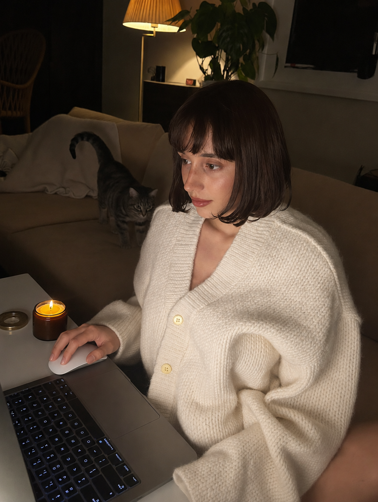
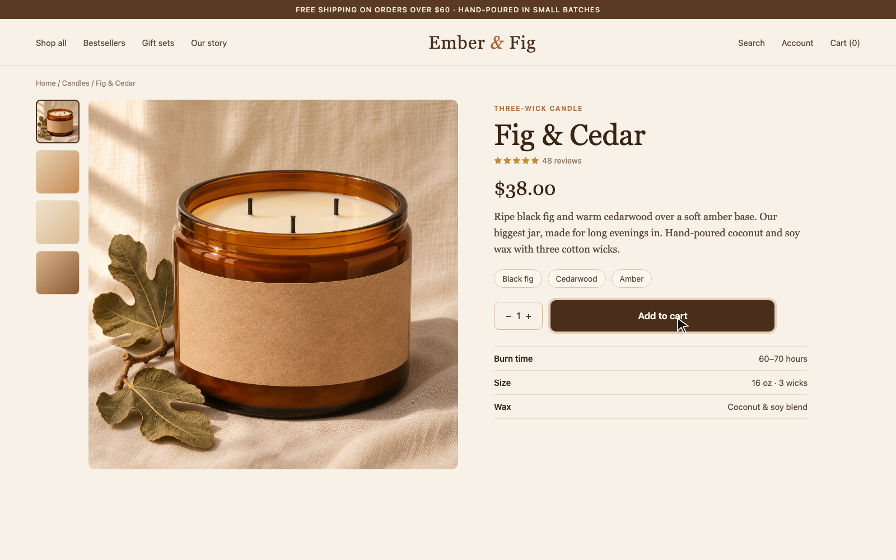
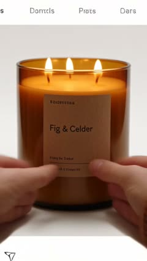
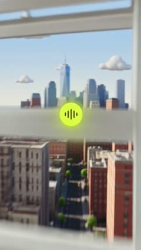
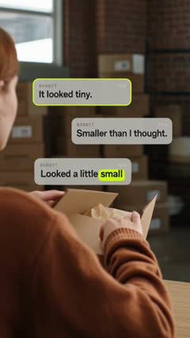
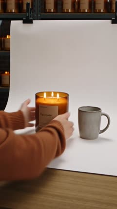
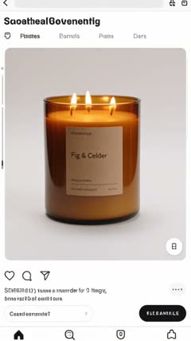
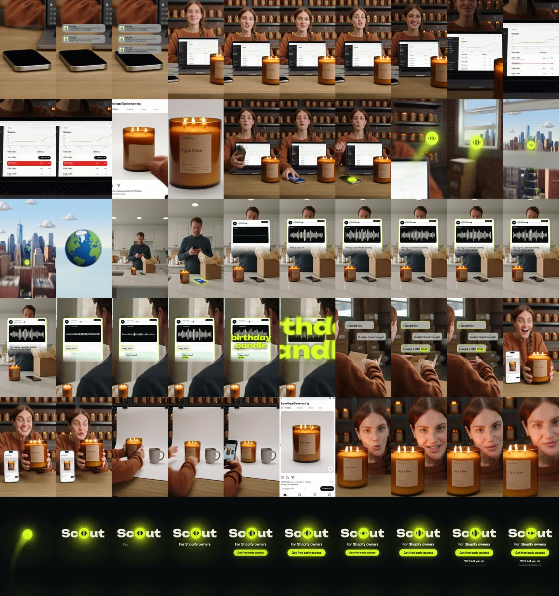

The difference from the other versions: the whole film is cut to The Dip's own camera moves and cut timing, sent as one grey, blurred 25-second video (Video 1).
Only these 13 files are uploaded, in this order, plus the prompt below. Nothing else on this page is sent.
The technique: The Dip skeleton (Video 1, 25 s)
Images (Image 1-8)

Image 1 · shopper

Image 2 · her screenImage 3 · ownerImage 4 · studioImage 5 · sales screenImage 6 · Scout orbImage 7 · the jarImage 8 · the cat
End screen and voices
Video 2 · end screen (25-30 s)Audio 1 · shopper voiceAudio 2 · owner voiceAudio 3 · Scout voice
H216 · Team E · Technique: The Dip as the skeleton (motion + rhythm transfer) · Nov 15 sd25-pe check (H228)
The Cat Question, cut to The Dip's heartbeat
The shopper was one answer away from buying, and the owner thought nobody wanted the candle. We tell it with the camera moves and cut timing of The Dip, the ad you already love: every beat lands where a Dip beat lands, and when we cut to the owner it is actress 14 in The Dip's sunlit studio.
Why this technique fits (with guide sections)
The guide supports motion transfer from a video. Its capability list includes Motion reference: "References motion and dynamic information from videos... camera movement" (prompt guide, Overall introduction → Typical multimodal capabilities).
We use the official motion-transfer sentence word for word. It comes from the 3D clay-model example: "use ... <video1> as the only reference for the entire video's camera movement, shot rhythm, shot-size changes, subject motion trajectory, and camera blocking. Strictly preserve the shot order, camera position changes, movement patterns, and pacing" (guide, Prompt examples → Coarse-grained 3D clay-model video). Like that example, our reference is now a plain, featureless motion guide: grey and blurred.
We name the dimensions to inherit and don't re-describe them. The guide says: "Strictly refer to the actions and camera movements in Video 1... There is no need to describe details" (guide, Reference tasks). sd25-pe adds that a reference video should not carry over "identity, clothing, or the entire scene" (sd25-pe §4, Generation with Reference Assets).
The Dip has no subtitles, and we strip its audio. The guide warns that "Subtitles in a reference video may override the no-subtitle instruction" (guide FAQ, Subtitles generated despite prompt constraints).
Every video and audio reference stays inside the hard limits. Video totals 25 + 4.5 = 29.5 s, under the 30 s cap. Audio totals 9 + 10 + 4.5 = 23.5 s, under the 30 s cap; the shopper and owner voices fall in the guide's 5–10 s sweet spot, and Audio 3 (4.5 s) is above the 2 s minimum (guide, Reference asset input recommendations; tutorial, Usage limits).
Input
Text 998 words (sd25-pe compile, send this)8 images2 videos (29.5 s)3 audio (23.5 s)Higgsfield seedance_2_5 · omni_referencedraft · 480p · 9:16 · 30 s · audio on90 credits (get_cost:true quote, Nov 14), 1 pass
One pass, with no extension needed: the end screen fits inside 30 s. Nothing has been generated; the 90 credits are a quote. The ratio and duration are set as parameters and stay out of the prompt (sd25-pe Principle 7).
Reference assets, in upload order
Upload order follows the order each subject first appears: shopper first, then owner (guide FAQ "Incorrect character-to-reference mapping": "upload reference assets in the order in which the subjects first appear"). The one ka-ching sits at 0–2 s, on the first notification (her add-to-cart), per Emile's rule for this brief; no chime or ka-ching is tied to the orb anywhere. Audio 3 is new in round 4: Scout's voice, taken from Video 2's own soundtrack, so Video 2 keeps one role. Images 1 and 4 and Video 1 are new this round. Nov 15: Image 7 (the jar) and Image 8 (the cat) are added, each with one job; the sofa, room, small candle and phone stay as words, as sd25-pe allows for furniture and props.
<image1>
Shopper, v2 (NEW: gpt_image_2_6 edit of the shared-cast Soul 2 still, job 561ba2d9)
Provides: One job (Nov 15): the shopper's face, bob with bangs and cream cardigan. Her room, laptop, mouse and candle are written in words in the prompt; her cat is Image 8.
Do not take: The room, laptop, mouse, candle or cat in the picture; any other person.
<image2>
Ember & Fig product page (media 527991c0)
Provides: The only screen on the shopper's laptop: Fig & Cedar, $38.00, Add to cart, and the Burn time, Size and Wax rows. Giving the exact words as an image follows guide FAQ "Text spelling errors", fix 2.
Do not take: Any pet-safety wording: the fact that it is missing is the story.
<image3>
Owner = actress 14 from The Dip (media 1963a66d)
Provides: Her face, auburn side braid and rust knit sweater. Her identity comes from this image and never from Video 1.
Do not take: The image background, because the face image sets the room (memory: post-mortem H210).
Provides: The Dip's room with no person in it, now in soft daylight from a window to match The Dip's bright studio. One job (Nov 15): the room only: the amber jar shelves, brick wall, packing table, kraft mailers and laptop.
Do not take: The Fig & Cedar jar in it; the jar comes from image7 (cropped from this same still), so one image is the room and one is the jar.
<image5>
Owner's admin product list (media 8c33aad5)
Provides: The only screen on her laptop: the Fig & Cedar row in red, 3 units, −84%.
Do not take: Never on the shopper's laptop.
<image6>
Scout logo (media af514c1f)
Provides: Scout's orb: a lime disc, five dark sound bars and a thin lime ring. It supplies shape and colour only.
Do not take: The wordmark lettering or black background, ever (the end screen comes from video2 alone).
<image7>
The Fig & Cedar jar (NEW Nov 15: crop of image4, uploaded free, media 2a029297)
Provides: One job: the one Fig & Cedar jar, tall amber, three wicks, kraft label. Used in every jar shot (11-25 s).
Do not take: The laptop and table behind it.
<image8>
The shopper's cat (NEW Nov 15: the free cat crop from H224, already uploaded, media 696c034b)
Provides: One job: the shopper's grey tabby cat, the reason she asks "safe for my cat?". Named in the 2-4 s, 6-7 s and 21-22 s shots.
Do not take: The sofa and blanket behind it.
<video1>
THE SKELETON: The Dip 0–25 s, silent, grey and blurred (NEW upload, media 419879cc)
Provides: Only camera movement, shot rhythm, shot-size changes, motion trajectory and blocking. The clip is now desaturated and blurred (gblur σ9), so it reads like the guide's simple clay-model reference, and ffmpeg still finds the same 11 cuts at T=0.3.
Do not take: Its people (actress 14 and the man), rooms, phones, cards and any text. The blur makes their faces unreadable, so the 0–9 s shopper slot has nothing to copy.
<video2>
H158 talking "o" end screen, 4.5 s (media cae62718)
Provides: Only the end-card picture, motion and words from 25 s (one role). Scout's voice now comes from Audio 3.
Do not take: Nothing before 25 s.
<audio1>
Shopper voice "Serene", 9 s (media 4203dd9a)
Provides: The voice quality, pace and emotion of her inner voice.
Do not take: Its words.
<audio2>
Owner voice Alexandra, 10 s (media 181644ae)
Provides: Voice quality, pace and emotion. It is the same voice as in The Dip.
Do not take: Its words.
<audio3>
Scout voice, 4.5 s (NEW round 4: Video 2's own soundtrack, cut with ffmpeg; media 390b5a38)
Provides: Scout's voice quality, pace and emotion in every Scout line.
The prompt follows sd25-pe's "Generation with Reference Assets" template, plus the motion-skeleton block from the clay-model example. The brackets follow the tutorial's Prompt rules: <> for sound effects, () for music only, {} for dialogue. Every line uses sd25-pe's language + delivery + speaker + {line} form, and the inner voice keeps her lips closed (guide FAQ, V.O. example). Timestamps are whole seconds with no gaps (guide, Timestamps).
Generation Goal
Generate a warm, realistic film: a shopper gives up on an Ember & Fig candle because nothing says it's safe for her cat; the owner thinks nobody wants it, until Scout stops her guess. Please note that this is not video editing.
Reference Asset Roles
Image 1 is the shopper: only her face, bob with bangs and cream cardigan; not the room, candle or cat.
Image 2 is only the shopper's laptop screen; keep its layout and words.
Image 3 is the owner: only her face, auburn braid and rust sweater; not the background.
Image 4 is only the owner's sunlit studio and laptop; not the Fig & Cedar jar.
Image 5 is only the owner's laptop screen; keep its layout and words.
Image 6 is Scout: only the lime disc with bars, as a small glowing orb; not the lettering.
Image 7 is only the Fig & Cedar jar; not the laptop or table.
Video 1 is a coarse-blockout reference; do not use its grey look, people, faces, rooms, screens or text.
Video 2 is only the end screen at 25-30s: picture, motion, on-screen words; not its audio.
Audio 1 is only the shopper's voice timbre; not its words.
Audio 2 is only the owner's voice timbre; not its words.
Audio 3 is only Scout's voice timbre; its words only in the end line.
Motion Skeleton
Use Video 1 as the only reference for the entire video's camera movement, shot rhythm, shot-size changes, subject motion trajectory and camera blocking. Strictly preserve the shot order, camera position changes, movement patterns and pacing of Video 1 from 0 to 25 seconds, with each cut on the nearest whole second given below. Follow Video 1's cut points and shot sizes everywhere except at 16-19s, where close shots of the owner's hands and jar replace its two over-the-shoulder shots.
In Video 1, the figure is the shopper (Image 1) at 0-9s and the owner (Image 3) at 11-21s and 23-25s; the desk phone at 0-2s is her laptop screen (Image 2); the desk jar at 2-8s is her small candle; the jar in hands at 16-21s is the Fig & Cedar jar (Image 7); the phone at 22-23s is the shopper's phone; the hand-held phone (19-21s), hand, jar and mug (21-22s) and round icon (9-11s) are unused.
Subjects and Relationships
Two women, never in the same room. The shopper (Image 1) is only in her dim living room at night: sofa, floor lamp, laptop, mouse, phone on a side table, her small lit candle, her cat (Image 8). The owner (Image 3) is only in her studio (Image 4), with the one jar (Image 7). Scout (Image 6) is one orb.
Event Script
0-2s, Video 1's macro: the shopper's (Image 1) hand clicks Add to cart on Image 2; a cart notification slides in. <a ka-ching> <soft mouse clicks> <a quiet room at night> Ends on the notification.
2-4s, Video 1's pull-back: to the shopper (Image 1) on her sofa, the cat (Image 8) walking behind her. The shopper's inner voice (Audio 1), off screen, lips closed, in American English, pleased and soft: {Ooh. That's the one.} Ends wide.
4-6s, Video 1's push: over the shopper's (Image 1) shoulder into Image 2 as she scrolls to the Wax row; nothing about pets. Inner voice (Audio 1), off screen, lips closed, in American English, unsure: {This one... safe for my cat?} Ends on the Wax row.
6-7s, Video 1's five flash cuts: the Wax row; the Burn time row; the shopper's (Image 1) frozen finger; her eyes; the cat (Image 8) passing her candle. <five quick soft whooshes> Ends on her eyes.
7-9s, hard cut, medium shot: the shopper (Image 1) lowers the laptop lid. Inner voice (Audio 1), off screen, lips closed, in American English, let down: {It doesn't say anywhere. Guess not.} <a soft lid click> Ends closed, unbought.
9-11s, Video 1's flight: the camera alone, no orb, flies out her window over the city, night turning to morning. <a long rising whoosh> (soft acoustic guitar begins) Ends high over the city.
11-12s, hard cut, wide: the owner (Image 3) at her laptop in the studio (Image 4), the jar (Image 7) burning beside it. The owner (Audio 2), on screen, in American English, puzzled: {Huh. Three sold?} Ends on her.
12-16s, hard cut, then Video 1's push-in to a medium close-up of the owner (Image 3), her laptop showing Image 5. The owner (Audio 2), on screen, in American English, half-laughing: {I thought Fig and Cedar would sell way more.} Ends close.
16-18s, hard cut, close on hands, tilting up to her face: the owner (Image 3) lifts the jar (Image 7) and blows out its flames. The owner (Audio 2), on screen, in American English, small sigh: {Okay. Nobody wants it. Guess I'm discontinuing it.} Ends on her face.
18-19s, hard cut, tilt up from the smoking jar (Image 7) with Scout (Image 6) rising from it; the owner's lips stay closed. Scout (Audio 3), from the orb, in American English, calm, friendly: {Wait.} Ends on the orb.
19-21s, Video 1's whip pan to the owner's (Image 3) face, jar (Image 7) in hand, Scout (Image 6) by her cheek; her lips stay closed. Scout (Audio 3), on screen, in American English, calm, friendly: {Don't guess. Your shoppers know why.} Ends on both.
21-22s, hard cut, insert, no person: Scout (Image 6) streaks into the shopper's room and settles by her candle beside the cat (Image 8). Scout (Audio 3), on screen, in American English, warm: {I'll ask them.} <a soft whoosh> Ends at rest.
22-23s, hard cut, top-down insert, no person: the shopper's phone lights up. <a phone buzzing on wood> Ends lit.
23-25s, Video 1's punch-in: the owner (Image 3) relights the jar (Image 7), a hopeful smile, lips closed. (the guitar lifts) Ends on the lit jar.
25-30s, match dissolve: the jar's (Image 7) flames merge into Scout (Image 6), which becomes the "o" of the end screen, exactly like Video 2. Scout (Audio 3), off screen, in American English, calm, friendly: {Scout interviews your shoppers for you. Get free early access.} Ends on Video 2.
Maintain Consistency
Keep each woman, home, jar (Image 7), cat (Image 8) and orb identical. Each line ends inside its shot. No subtitles; no on-screen words except in Image 2, Image 5, Image 7 and Video 2.
Nov 15 sd25-pe check: this is the prompt to send (prompt-sd25pe-final.txt). Every shot names who is in it with her image (the shopper Image 1, the owner Image 3, Scout Image 6, the jar Image 7, the cat Image 8), each image has one job, and every shot names its move from The Dip skeleton (Video 1) or says it is a named exception or hard cut. Item-by-item check: SD25-CHECK.md.
Shot list
Time (s)
Shot size
Angle
Movement
Transition (Dip cut)
Sound
Line
Inspiration
0–2
Macro / ECU
Low, on the table
Pull from macro
Hard cut in
<ka-ching> on the add-to-cart notification, <mouse clicks>, quiet room
One continuous flight out the window over the rooftops, night to morning; camera only, no orb yet
Continuous
<rising whoosh>, (guitar bed begins)
—
The Dip 8.6–11.1 s flight; Higgsfield Earth zoom (1ac7759b, illustration, not sent to Seedance)
11–12
Wide
Eye level
Settle
Hard cut (Dip 11.08)
Guitar bed
Owner: Huh. Three sold?
The Dip 11.1–12.2 s wide
12–16
Medium → MCU
Eye level
Push in
Hard cut (Dip 12.17)
Guitar bed
Owner: I thought Fig and Cedar would sell way more.
The Dip 12.2–15.6 s push-in
16–18
Close on hands → face
Slight high
Tilt up; she blows out the three flames
Hard cut (Dip 15.63, rounded to 16)
Jar on wood, a soft blow
Owner: Okay. Nobody wants it. Guess I'm discontinuing it.
Named exception: replaces The Dip's over-the-shoulder (H194 clone lesson)
18–19
Close on jar in her hands
Slight high
Tilt up with the orb rising from the smoke
Hard cut (Dip 17.83)
Guitar bed (no chime on the orb)
Scout: Wait.
Named exception: replaces The Dip's from-behind shot (solo-character rule)
19–21
Close-up, front on
Eye level
Whip pan in
Whip pan (Dip 19.4)
Guitar bed
Scout: Don't guess. Your shoppers know why.
The Dip 19.4–21 s front-on, jar in both hands
21–22
Insert
Table level
Orb streaks in, settles
Hard cut (Dip 21.04)
<soft whoosh>
Scout: I'll ask them.
The Dip 21.0–22.4 s photo-setup insert
22–23
Insert / phone
Top down
Phone lights up, incoming call
Hard cut (Dip 22.42)
<phone buzzing on wood>
—
The Dip 22.4–23.2 s phone-screen insert
23–25
Punch-in CU
Eye level
Punch in
Hard cut (Dip 23.17)
(guitar bed lifts), match strike
— (silent fix, music under)
The Dip 23.2–25 s punch-in
25–30
End card
Flat
Flames → orb → "o"
Match dissolve
Scout voice
Scout: Scout interviews your shoppers for you. Get free early access.
H158 end screen (Video 2)
Spoken words: 46 in the story and 10 on the end screen, 56 in total. The busiest shot runs at 3 words per second (12–15 s and 21–22 s). Every line finishes inside its own shot. The flight (9–11 s) and the fix (23–25 s) now have the guitar bed under them, so there is no dead air.
ffmpeg scene detection (select='gt(scene,0.3)'). The colour clip and the grey clip return identical cuts:
T=0.3: 5.79 6.04 6.17 6.25 6.42 6.83 15.63 17.83 21.04 22.42 23.17 T=0.1 adds: 8.58–8.83 (orb lift-off) 11.08 12.17 19.38–19.54 (whip pan) Read from the 2 fps contact sheet: pull-back (~1.5 s), push into the laptop (~4.0 s)
Each of The Dip's beats maps to one of ours, rounded to the nearest whole second, as the guide's timestamp rule requires. There is one named exception (15–19 s, The Dip's two over-the-shoulder shots). Everything else keeps The Dip's shot sizes and cut points.
Map: each Dip shot and the shot that replaces it
Illustration, not sent to Seedance
Dip 0.0–1.5 s macro on phone, banners slide in
→
Illustration, not sent to Seedance
Ours 0–2 s Macro: her hand on the white mouse, the cursor glides to Add to cart; the add-to-cart notification slides in with the ka-ching
Illustration, not sent to Seedance
Dip 1.5–4.0 s continuous pull-back to the presenter at the table
→
Illustration, not sent to Seedance
Ours 2–4 s Pull back: shopper on the sofa, hand on the mouse, cat behind. V.O. "Ooh. That's the one."
Illustration, not sent to Seedance
Dip 4.0–5.8 s push into the laptop, red product row
→
from refs
Ours 4–6 s Push into her screen: Burn time, Size, Wax, and no word about pets. V.O. "This one... safe for my cat?"

Illustration, not sent to Seedance
Dip 5.8–6.8 s five flash shots (cuts 5.79 / 6.04 / 6.17 / 6.25 / 6.42 / 6.83)
→
Illustration, not sent to Seedance
Ours 6–7 s Five flashes: Wax row, Burn time row, frozen finger, eyes lift, the cat in soft focus behind her
Illustration, not sent to Seedance
Dip 6.8–8.6 s presenter lifts phone, speaks a line
→
Illustration, not sent to Seedance
Ours 7–9 s Medium on her, she lowers the lid. V.O. "It doesn't say anywhere. Guess not."

Illustration, not sent to Seedance
Dip 8.6–11.1 s one continuous flight: orb out the window, over the city to the globe
→
from refs
Ours 9–11 s The same continuous flight: out her dark window, over the rooftops as night turns to morning
Illustration, not sent to Seedance
Dip 11.1–12.2 s hard cut, wide on the second home
→
from refs
Ours 11–12 s Wide in her sunlit studio. "Huh. Three sold?"
Illustration, not sent to Seedance
Dip 12.2–15.6 s push in, a screen card rises
→
Illustration, not sent to Seedance
Ours 12–15 s Push in on her and the red Fig & Cedar row. "I thought Fig and Cedar would sell way more."
Illustration, not sent to Seedance
Dip 15.6–17.8 s over-the-shoulder, words fly at the lens
→
from refs
Ours 15–18 s NAMED EXCEPTION, part 1: close on her hands lifting the jar, then she looks up. "Okay. Nobody wants it. Guess I'm discontinuing it."

Illustration, not sent to Seedance
Dip 17.8–19.4 s owner seen from behind her shoulder, quote cards beside her
→
from refs
Ours 18–19 s NAMED EXCEPTION, part 2: close on the jar in her hands as Scout's orb rises from the candle smoke. "Wait."
Illustration, not sent to Seedance
Dip 19.4–21.0 s whip to a front-on reveal, jar in both hands
→
Illustration, not sent to Seedance
Ours 19–21 s Whip pan, front on: her face, jar in both hands, orb by her cheek. "Don't guess. Your shoppers know why."

Illustration, not sent to Seedance
Dip 21.0–22.4 s photo-setup insert: hands place the jar on a white backdrop
→
from refs
Ours 21–22 s Insert: the orb settles beside the shopper's candle, the cat curled up nearby. "I'll ask them."

Illustration, not sent to Seedance
Dip 22.4–23.2 s phone-screen insert
→
from refs
Ours 22–23 s Insert: the shopper's phone lights up with an incoming call (a plain buzz, no orb on the screen)
Illustration, not sent to Seedance
Dip 23.2–25.0 s punch-in, presenter beside the lit jar
→
Illustration, not sent to Seedance
Ours 23–25 s Punch in: she relights the three wicks, a hopeful smile (the guitar bed lifts)
Illustration, not sent to Seedance
Dip end (cut off: not in Video 1)
→
from refs
Ours 25–30 s Flames merge into the orb, then the Video 2 end screen

Illustration, not sent to Seedance
The concept frames on the right are page illustrations made with gpt_image_2_6. They are not uploaded to Seedance.
Borrowed camera move (Higgsfield Viral, browsed free)
Illustration, not sent to Seedance
Earth zoom (1ac7759b): the same family of move as The Dip's orb flight. It is the feel we want at 9–11 s as the camera rises over the rooftops.
Illustration, not sent to Seedance
High flip (93a606f8): dropped this round. The Dip never flips, and the skeleton wins.
History (Nov 14): our prompt and ByteDance's compile, side by side
History. The notes in this section describe the Nov 14 round-4 compile (11 uploads, 1,264 words). The prompt to send is the Nov 15 final: the one at the top of the page and in the right-hand column here (13 uploads, see SD25-CHECK.md).
Send the compile (right). It keeps every spoken line word for word and all three motion-skeleton sentences verbatim, and it adds what sd25-pe says the model needs. The copy button below copies it.
This round (H228, Nov 14) the real sd25-pe skill loaded through the Skill tool in this session. Its self-update command ran and found no newer copy, so the local version was used. Round 2's compile (below the fold, kept as prompt-sd25pe.txt) was done by hand and dropped the skeleton; this one doesn't.
Ours, retired · 963 words · history only, not sent
【Generation Goal】
A realistic, warm short film in two homes. Late at night, a shopper almost buys a candle from the small brand Ember & Fig and quietly gives up because nothing tells her if it is safe for her cat. Later, in her bright, sunlit candle studio, the owner of Ember & Fig reads the slow sales as nobody wanting that candle, until a glowing lime orb, Scout, stops her guess. Please note that this is not video editing.
【Motion Skeleton】
Use @Video1 as the only reference for the entire video's camera movement, shot rhythm, shot-size changes, subject motion trajectory and camera blocking. Strictly preserve the shot order, camera position changes, movement patterns and pacing of @Video1 from 0 to 25 seconds, with each cut on the nearest whole second given below. Follow @Video1's cut points and shot sizes everywhere except at 15-19s, where close shots of the owner's hands and jar replace its two over-the-shoulder shots. @Video1 is a grey, blurred motion guide: take only motion, framing and timing from it, never its people, faces, rooms, phones, screens, cards or text.
【Reference Asset Roles】
@Image1 is the shopper, her cat and her dim living room at night, with the laptop and white mouse on the side table.
@Image2 is the only screen on the shopper's laptop. Keep its layout and words.
@Image3 is the owner of Ember & Fig: only her face, hair and sweater, not the background.
@Image4 is the owner's sunlit candle studio with the lit three-wick Fig & Cedar jar. Every owner shot happens here.
@Image5 is the only screen on the owner's laptop. Keep its layout and words.
@Image6 is Scout's shape and colour only, with no lettering before the end screen.
@Video2 is only the end screen from 25 seconds: copy its picture, motion and words.
@Audio1 is the shopper's inner voice: quality, pace and emotion only, not its words.
@Audio2 is the owner's voice: quality, pace and emotion only, not its words.
@Audio3 is Scout's voice in every Scout line: quality, pace and emotion only.
【Shots】
0-2s: Macro on the shopper's hand on the white mouse; @Image2 fills her laptop screen, the cursor glides to Add to cart and clicks, and a small add-to-cart notification with a cart icon slides in at the top corner of her screen. <a ka-ching> <soft mouse clicks> <a quiet room at night>
2-4s: Pull back to the shopper on her sofa, laptop open on the low side table, her hand on the white mouse beside it, the cat walking along the sofa behind her. In American English, pleased and soft, the shopper's inner voice, her lips closed: {Ooh. That's the one.}
4-6s: Push into her screen as she scrolls to the Burn time, Size and Wax rows; nothing about pets anywhere. In American English, unsure, the shopper's inner voice, her lips closed: {This one... safe for my cat?}
6-7s: Five flash cuts: the Wax row; the Burn time row; her finger frozen above the mouse button; her eyes lifting from the screen; the cat in soft focus behind her, stepping past the lit jar. <five quick soft whooshes>
7-9s: Close on her face lit by the screen, lips closed; she lowers the laptop lid. In American English, let down, the shopper's inner voice, her lips closed: {It doesn't say anywhere. Guess not.} <a soft lid click>
9-11s: One continuous flight: the camera lifts off her closed laptop, glides out of her dark window and rises over the city rooftops as the night sky turns to morning. <a long rising whoosh> (a soft, warm acoustic guitar bed begins)
11-12s: Hard cut, wide in the sunlit studio: the owner at the packing table, the Fig & Cedar jar burning beside her laptop. In American English, puzzled, the owner says: {Huh. Three sold?}
12-15s: Push in on her and her laptop showing @Image5. In American English, half-laughing, the owner says: {I thought Fig and Cedar would sell way more.}
15-18s: Close on her hands lifting the burning Fig & Cedar jar off the table, then she looks up. In American English, with a small sigh, the owner says: {Okay. Nobody wants it. Guess I'm discontinuing it.}
18-19s: Close on the jar in her hands as a small glowing lime orb with pulsing sound bars rises out of the candle smoke beside her. In American English, calm and friendly, Scout says: {Wait.}
19-21s: Whip pan to her face, front on, the jar in both hands, the orb floating beside her cheek, her lips closed as she listens. In American English, calm and friendly, Scout says: {Don't guess. Your shoppers know why.}
21-22s: Insert: the orb streaks into the shopper's dim living room and settles beside her candle, the cat curled up nearby. In American English, warm, Scout says: {I'll ask them.} <a soft whoosh>
22-23s: Insert: the shopper's phone on the side table lights up with an incoming call. <a phone buzzing on wood>
23-25s: Punch in on the owner relighting the three wicks and setting the jar back on the table, a small hopeful smile. (the warm guitar bed lifts)
25-30s: The three flames merge into the glowing lime orb, which becomes the "o" of the Scout end screen, exactly like @Video2. In American English, calm and friendly, Scout says: {Scout interviews your shoppers for you. Get free early access.}
【Maintain Consistency】
Exactly two women, each in her own home. Keep each face, hair and outfit identical in every shot. The shopper's lips stay closed in every shot; only her inner voice is heard. The owner keeps her lips closed while Scout speaks. Scout's voice comes only from the orb and the end screen. Each line finishes inside its shot. No subtitles. No on-screen words except those in @Image2, @Image5 and @Video2.
sd25-pe final, Nov 15 check (send this) · 998 words
【Generation Goal】
Generate a warm, realistic film: a shopper gives up on an Ember & Fig candle because nothing says it's safe for her cat; the owner thinks nobody wants it, until Scout stops her guess. Please note that this is not video editing.
【Reference Asset Roles】
@Image1 is the shopper: only her face, bob with bangs and cream cardigan; not the room, candle or cat.
@Image2 is only the shopper's laptop screen; keep its layout and words.
@Image3 is the owner: only her face, auburn braid and rust sweater; not the background.
@Image4 is only the owner's sunlit studio and laptop; not the Fig & Cedar jar.
@Image5 is only the owner's laptop screen; keep its layout and words.
@Image6 is Scout: only the lime disc with bars, as a small glowing orb; not the lettering.
@Image7 is only the Fig & Cedar jar; not the laptop or table.
@Image8 is only the shopper's cat; not the sofa.
@Video1 is a coarse-blockout reference; do not use its grey look, people, faces, rooms, screens or text.
@Video2 is only the end screen at 25-30s: picture, motion, on-screen words; not its audio.
@Audio1 is only the shopper's voice timbre; not its words.
@Audio2 is only the owner's voice timbre; not its words.
@Audio3 is only Scout's voice timbre; its words only in the end line.
【Motion Skeleton】
Use @Video1 as the only reference for the entire video's camera movement, shot rhythm, shot-size changes, subject motion trajectory and camera blocking. Strictly preserve the shot order, camera position changes, movement patterns and pacing of @Video1 from 0 to 25 seconds, with each cut on the nearest whole second given below. Follow @Video1's cut points and shot sizes everywhere except at 16-19s, where close shots of the owner's hands and jar replace its two over-the-shoulder shots.
In @Video1, the figure is the shopper (@Image1) at 0-9s and the owner (@Image3) at 11-21s and 23-25s; the desk phone at 0-2s is her laptop screen (@Image2); the desk jar at 2-8s is her small candle; the jar in hands at 16-21s is the Fig & Cedar jar (@Image7); the phone at 22-23s is the shopper's phone; the hand-held phone (19-21s), hand, jar and mug (21-22s) and round icon (9-11s) are unused.
【Subjects and Relationships】
Two women, never in the same room. The shopper (@Image1) is only in her dim living room at night: sofa, floor lamp, laptop, mouse, phone on a side table, her small lit candle, her cat (@Image8). The owner (@Image3) is only in her studio (@Image4), with the one jar (@Image7). Scout (@Image6) is one orb.
【Event Script】
0-2s, @Video1's macro: the shopper's (@Image1) hand clicks Add to cart on @Image2; a cart notification slides in. <a ka-ching> <soft mouse clicks> <a quiet room at night> Ends on the notification.
2-4s, @Video1's pull-back: to the shopper (@Image1) on her sofa, the cat (@Image8) walking behind her. The shopper's inner voice (@Audio1), off screen, lips closed, in American English, pleased and soft: {Ooh. That's the one.} Ends wide.
4-6s, @Video1's push: over the shopper's (@Image1) shoulder into @Image2 as she scrolls to the Wax row; nothing about pets. Inner voice (@Audio1), off screen, lips closed, in American English, unsure: {This one... safe for my cat?} Ends on the Wax row.
6-7s, @Video1's five flash cuts: the Wax row; the Burn time row; the shopper's (@Image1) frozen finger; her eyes; the cat (@Image8) passing her candle. <five quick soft whooshes> Ends on her eyes.
7-9s, hard cut, medium shot: the shopper (@Image1) lowers the laptop lid. Inner voice (@Audio1), off screen, lips closed, in American English, let down: {It doesn't say anywhere. Guess not.} <a soft lid click> Ends closed, unbought.
9-11s, @Video1's flight: the camera alone, no orb, flies out her window over the city, night turning to morning. <a long rising whoosh> (soft acoustic guitar begins) Ends high over the city.
11-12s, hard cut, wide: the owner (@Image3) at her laptop in the studio (@Image4), the jar (@Image7) burning beside it. The owner (@Audio2), on screen, in American English, puzzled: {Huh. Three sold?} Ends on her.
12-16s, hard cut, then @Video1's push-in to a medium close-up of the owner (@Image3), her laptop showing @Image5. The owner (@Audio2), on screen, in American English, half-laughing: {I thought Fig and Cedar would sell way more.} Ends close.
16-18s, hard cut, close on hands, tilting up to her face: the owner (@Image3) lifts the jar (@Image7) and blows out its flames. The owner (@Audio2), on screen, in American English, small sigh: {Okay. Nobody wants it. Guess I'm discontinuing it.} Ends on her face.
18-19s, hard cut, tilt up from the smoking jar (@Image7) with Scout (@Image6) rising from it; the owner's lips stay closed. Scout (@Audio3), from the orb, in American English, calm, friendly: {Wait.} Ends on the orb.
19-21s, @Video1's whip pan to the owner's (@Image3) face, jar (@Image7) in hand, Scout (@Image6) by her cheek; her lips stay closed. Scout (@Audio3), on screen, in American English, calm, friendly: {Don't guess. Your shoppers know why.} Ends on both.
21-22s, hard cut, insert, no person: Scout (@Image6) streaks into the shopper's room and settles by her candle beside the cat (@Image8). Scout (@Audio3), on screen, in American English, warm: {I'll ask them.} <a soft whoosh> Ends at rest.
22-23s, hard cut, top-down insert, no person: the shopper's phone lights up. <a phone buzzing on wood> Ends lit.
23-25s, @Video1's punch-in: the owner (@Image3) relights the jar (@Image7), a hopeful smile, lips closed. (the guitar lifts) Ends on the lit jar.
25-30s, match dissolve: the jar's (@Image7) flames merge into Scout (@Image6), which becomes the "o" of the end screen, exactly like @Video2. Scout (@Audio3), off screen, in American English, calm, friendly: {Scout interviews your shoppers for you. Get free early access.} Ends on @Video2.
【Maintain Consistency】
Keep each woman, home, jar (@Image7), cat (@Image8) and orb identical. Each line ends inside its shot. No subtitles; no on-screen words except in @Image2, @Image5, @Image7 and @Video2.
Emile's checklist for this pass (card comments, Nov 14)
Each asset has one role. Done. Every asset has one line saying what to take and, where it matters, what not to take. Video 1 is now named for what it is in sd25-pe's terms, a coarse-blockout reference, Video 2 is only the end screen (picture, motion and words), and Scout's voice is its own asset, Audio 3, cut from Video 2's soundtrack, so every Scout line says "in the voice of @Audio3". Image 1 is now two lines: the shopper (face, hair, cardigan) and her living room, both from Image 1, so each line defines one subject or one scene (sd25-pe §4).
Unused assets listed. All 11 uploads (6 images, 2 videos, 3 audio) have a role, so there is no 【Unused Assets】 block: sd25-pe Principle 3 lists only assets with no role.
Exact dialogue. Checked by script: the 10 {lines} (56 words) match ours character for character, in the same order, under the same 15 whole-second ranges. Video 2's own soundtrack was transcribed (Deepgram) and says exactly our end line, "Scout interviews your shoppers for you. Get free early access.", so no "do not use its words" is needed there.
() <> {} sound marks. () only for the 2 music cues, <> for the 8 sound effects (one ka-ching, at 0–2 s only), {} for the 10 lines. No 【】, because there are no subtitles.
Ka-ching and the orb (card comment 23:41 UTC, from H229). Done. One <a ka-ching>, in the 0–2 s line only, on the first notification: her add-to-cart notification. No chime or ka-ching is tied to the orb: the <a soft chime> on the orb at 18–19 s is gone, and at 22–23 s the phone just buzzes with an incoming call and no orb on its screen. There is no second ka-ching because there is no full-price order in this story. The ka-ching on an add-to-cart that she then abandons is my reading of your rule for a no-sale story; say if you want it gone.
No ratio or duration in the text. Checked: no 9:16, 480p, 30 s or "vertical" (the logo's "vertical sound bars" became "upright" because an earlier compile read "vertical" as a ratio). "From 0 to 25 seconds" and the time ranges are creative timing, which sd25-pe keeps.
What the compile changed
The technique is intact. All three motion-transfer sentences are there word for word, including the named 15–19 s exception, plus the gate line "Please note that this is not video editing." (the gate fires: the output is 30 s, Video 1 is 25 s and Video 2 is 4.5 s).
New: the blockout's figure is mapped. "The blurred main figure in @Video1 corresponds to the shopper from 0 to 9 seconds and to the owner from 11 to 21 seconds and from 23 to 25 seconds; the 21-23s inserts have no person in frame." sd25-pe's coarse-blockout rule asks for each blockout figure to be mapped; this also answers the old risk that The Dip runs owner→shopper→owner.
New: who speaks from where. Every line now says on screen or off screen; the shopper's lines are "inner voice, off screen" with her lips closed; Scout's mid-film lines come "from the orb, in the voice of @Audio3"; and the owner's lips stay closed at 18–19 s as well as 19–21 s.
New: cause before reaction. At 11–12 s "her eyes on her laptop screen" comes before "Huh. Three sold?", so the screen is the trigger she reacts to.
New: an end state and a relationships block. "At the end: the owner's jar is lit again…", and "The two women never share a room. Scout is the only thing that crosses between the two homes."
Cost: length. 963 → 1264 words, mostly the asset lines and the speaker labels. sd25-pe sets no word cap, and the official 30 s examples run 380–740 words, so this is long. Nothing in it re-describes an asset beyond naming what to take.
Why send the compile: round 2's hand compile lost the skeleton, so we sent ours. This compile keeps the skeleton word for word and fixes the gaps sd25-pe exists to catch (speaker positions, blockout mapping, listener lips, end state). The only thing it costs is length.
Round 2: hand compile (superseded)
The sd25-pe skill is not installed in this session (the Skill call returned "Unknown skill"). I ran its rules by hand from the copy in seedance-docs: the Generation with Reference Assets template, Organizing Multiple Reference Assets, the dialogue ledger, the compatibility gate and the Final Checklist.
Mine (round 2, history, not sent) · 944 words
【Generation Goal】
A realistic, warm short film in two homes. Late at night, a shopper almost buys a candle from the small brand Ember & Fig and quietly gives up because nothing tells her if it is safe for her cat. Later, in her bright, sunlit candle studio, the owner of Ember & Fig reads the slow sales as nobody wanting that candle, until a glowing lime orb, Scout, stops her guess. Please note that this is not video editing.
【Motion Skeleton】
Use @Video1 as the only reference for the entire video's camera movement, shot rhythm, shot-size changes, subject motion trajectory and camera blocking. Strictly preserve the shot order, camera position changes, movement patterns and pacing of @Video1 from 0 to 25 seconds, with each cut on the nearest whole second given below. Follow @Video1's cut points and shot sizes everywhere except at 15-19s, where close shots of the owner's hands and jar replace its two over-the-shoulder shots. @Video1 is a grey, blurred motion guide: take only motion, framing and timing from it, never its people, faces, rooms, phones, screens, cards or text.
【Reference Asset Roles】
@Image1 is the shopper, her cat and her dim living room at night, with the laptop and white mouse on the side table.
@Image2 is the only screen on the shopper's laptop. Keep its layout and words.
@Image3 is the owner of Ember & Fig: only her face, hair and sweater, not the background.
@Image4 is the owner's sunlit candle studio with the lit three-wick Fig & Cedar jar. Every owner shot happens here.
@Image5 is the only screen on the owner's laptop. Keep its layout and words.
@Image6 is Scout's shape and colour only, with no lettering before the end screen.
@Video2 is only the end screen from 25 seconds: copy its picture, motion and words.
@Audio1 is the shopper's inner voice: quality, pace and emotion only, not its words.
@Audio2 is the owner's voice: quality, pace and emotion only, not its words.
@Audio3 is Scout's voice in every Scout line: quality, pace and emotion only.
【Shots】
0-2s: Macro on the shopper's hand on the white mouse; @Image2 fills her laptop screen, the cursor glides to Add to cart and clicks, and a small add-to-cart notification with a cart icon slides in at the top corner of her screen. <a ka-ching> <soft mouse clicks> <a quiet room at night>
2-4s: Pull back to the shopper on her sofa, laptop open on the low side table, her hand on the white mouse beside it, the cat walking along the sofa behind her. In American English, pleased and soft, the shopper's inner voice, her lips closed: {Ooh. That's the one.}
4-6s: Push into her screen as she scrolls to the Burn time, Size and Wax rows; nothing about pets anywhere. In American English, unsure, the shopper's inner voice, her lips closed: {This one... safe for my cat?}
6-7s: Five flash cuts: the Wax row; the Burn time row; her finger frozen above the mouse button; her eyes lifting from the screen; the cat in soft focus behind her, stepping past the lit jar. <five quick soft whooshes>
7-9s: Close on her face lit by the screen, lips closed; she lowers the laptop lid. In American English, let down, the shopper's inner voice, her lips closed: {It doesn't say anywhere. Guess not.} <a soft lid click>
9-11s: One continuous flight: the camera lifts off her closed laptop, glides out of her dark window and rises over the city rooftops as the night sky turns to morning. <a long rising whoosh> (a soft, warm acoustic guitar bed begins)
11-12s: Hard cut, wide in the sunlit studio: the owner at the packing table, the Fig & Cedar jar burning beside her laptop. In American English, puzzled, the owner says: {Huh. Three sold?}
12-15s: Push in on her and her laptop showing @Image5. In American English, half-laughing, the owner says: {I thought Fig and Cedar would sell way more.}
15-18s: Close on her hands lifting the burning Fig & Cedar jar off the table, then she looks up. In American English, with a small sigh, the owner says: {Okay. Nobody wants it. Guess I'm discontinuing it.}
18-19s: Close on the jar in her hands as a small glowing lime orb with pulsing sound bars rises out of the candle smoke beside her. In American English, calm and friendly, Scout says: {Wait.}
19-21s: Whip pan to her face, front on, the jar in both hands, the orb floating beside her cheek, her lips closed as she listens. In American English, calm and friendly, Scout says: {Don't guess. Your shoppers know why.}
21-22s: Insert: the orb streaks into the shopper's dim living room and settles beside her candle, the cat curled up nearby. In American English, warm, Scout says: {I'll ask them.} <a soft whoosh>
22-23s: Insert: the shopper's phone on the side table lights up with an incoming call. <a phone buzzing on wood>
23-25s: Punch in on the owner relighting the three wicks and setting the jar back on the table, a small hopeful smile. (the warm guitar bed lifts)
25-30s: The three flames merge into the glowing lime orb, which becomes the "o" of the Scout end screen, exactly like @Video2. In American English, calm and friendly, Scout says: {Scout interviews your shoppers for you. Get free early access.}
【Maintain Consistency】
Exactly two women, each in her own home. Keep each face, hair and outfit identical in every shot. The shopper's lips stay closed in every shot; only her inner voice is heard. The owner keeps her lips closed while Scout speaks. Scout's voice comes only from the orb and the end screen. Each line finishes inside its shot. No subtitles. No on-screen words except those in @Image2, @Image5 and @Video2.
sd25-pe compile · 1053 words
【Generation Goal】
Generate a realistic, warm short film in two homes. The core subjects are a shopper and the owner of the candle brand Ember & Fig, and the principal event is a sale lost to one unanswered question: at night the shopper abandons a candle because nothing says whether it is safe for her cat; later, in her sunlit studio, the owner decides to discontinue that candle until Scout, a glowing lime orb, stops her guess. Please note that this is not video editing.
【Reference Asset Roles】
@Image1 is used for the shopper's facial features, dark-brown bob with bangs and cream knit cardigan, and for her dim living room at night with the side table, laptop, white mouse, lit amber candle and grey tabby cat.
@Image2 is used for the only screen on the shopper's laptop, the Fig & Cedar product page, with its layout and words unchanged.
@Image3 is used for the owner's facial features, auburn side braid and rust knit sweater; do not use the image background.
@Image4 is used for the owner's sunlit candle studio: amber jar shelves, brick wall, wooden packing table, kraft mailers, laptop and the lit three-wick Fig & Cedar jar.
@Image5 is used for the only screen on the owner's laptop, her product list with the Fig & Cedar row outlined in red, with its layout and words unchanged.
@Image6 is used for Scout's shape and colour: a glowing lime disc with five dark vertical sound bars and a thin lime ring; do not use its lettering before the end screen.
@Video1 is used as the only reference for camera movement, shot rhythm, shot-size changes, subject motion trajectory and camera blocking from 0 to 25 seconds, preserving its shot order and pacing; do not use its people, faces, rooms, phones, screens, cards or text.
@Video2 is used for the end screen's picture, motion and words from 25 seconds to the end, and for Scout's voice quality in every Scout line.
@Audio1 is used for the shopper's inner-voice quality, pace and emotion; do not use its words.
@Audio2 is used for the owner's voice quality, pace and emotion; do not use its words.
【Subjects and Relationships】
The shopper maps to @Image1 and only ever appears in her own living room with her cat. The owner maps to @Image3 and only ever appears in the studio from @Image4. The two women never share a room. Scout maps to @Image6 and is the only thing that crosses between the two homes. The shopper's laptop shows only @Image2; the owner's laptop shows only @Image5.
【Event Script】
0-2s: Macro on the shopper's hand on the white mouse; the cursor glides to Add to cart on @Image2. <soft mouse clicks> <a quiet room at night>
2-4s: The camera pulls back to the shopper on her sofa, her hand on the mouse beside the laptop on the low side table, the candle burning, the cat walking along the sofa behind her. Her lips stay closed. In American English, pleased and soft, the shopper's inner voice: {Ooh. That's the one.}
4-6s: The camera pushes into her screen as she scrolls to the Burn time, Size and Wax rows, with nothing about pets. Her lips stay closed. In American English, unsure, the shopper's inner voice: {This one... safe for my cat?}
6-7s: Five flash cuts: the Wax row; the Burn time row; her finger stopping above the mouse button; her eyes lifting from the screen; the cat in soft focus behind her stepping past the lit jar. <five quick soft whooshes>
7-9s: Close on her face lit by the screen; her brows tighten slightly and she lowers the laptop lid. Her lips stay closed. In American English, let down, the shopper's inner voice: {It doesn't say anywhere. Guess not.} <a soft lid click>
9-11s: In one continuous move, the camera lifts off the closed laptop, glides out of her dark window and rises over the city rooftops while the night sky turns to morning. <a long rising whoosh> (a soft, warm acoustic guitar bed begins)
11-12s: Hard cut to a wide shot in the sunlit studio: the owner at the packing table beside her laptop and the burning Fig & Cedar jar. In American English, puzzled, the owner says: {Huh. Three sold?}
12-15s: The camera pushes in on her and her laptop showing @Image5. In American English, half-laughing, the owner says: {I thought Fig and Cedar would sell way more.}
15-18s: Close on her hands lifting the burning jar off the table; then she looks up. In American English, with a small sigh, the owner says: {Okay. Nobody wants it. Guess I'm discontinuing it.}
18-19s: Close on the jar in her hands as a small glowing lime orb with pulsing sound bars rises out of the candle smoke. In American English, calm and friendly, Scout says: {Wait.} <a soft chime>
19-21s: Whip pan to her face, front on, the jar in both hands, the orb beside her cheek; her lips stay closed while she listens. In American English, calm and friendly, Scout says: {Don't guess. Your shoppers know why.}
21-22s: Insert: the orb streaks into the shopper's dim living room and settles beside her candle, the cat curled up nearby. In American English, warm, Scout says: {I'll ask them.} <a soft whoosh>
22-23s: Insert: the shopper's phone on the side table lights up with a lime glow and pulsing sound bars. <a gentle ring>
23-25s: Punch in on the owner relighting the three wicks and setting the jar back down, a small hopeful smile. (the warm guitar bed lifts)
25-30s: The three flames merge into the lime orb, which becomes the "o" of the Scout end screen from @Video2. In American English, calm and friendly, Scout says: {Scout interviews your shoppers for you. Get free early access.}
At the end: the owner's jar is lit again on her table, and the end screen holds as in @Video2.
【Maintain Consistency】
Keep exactly two women, each face, hair and outfit, each home and the Fig & Cedar jar stable. The shopper's lips stay closed throughout; only her inner voice is heard. Scout's voice comes only from the orb and the end screen. Each line finishes inside its time segment. No subtitles appear on screen, and no on-screen words appear except those in @Image2, @Image5 and @Video2.
What the compile changed, checked against the craft rules
Same in both: every line, the speakers, the brackets ((), <>, {}), whole-second timestamps, the not-video-editing sentence, and no ratio or duration in the prompt. The dialogue ledger matches: 56 words, 4 speakers, and the inner voice kept with lips closed.
Compile adds a 【Subjects and Relationships】 block ("the two women never share a room; Scout is the only thing that crosses between the two homes") and an "At the end" state line. Both are good. Mine already says the same in 【Maintain Consistency】 and in the shots.
Compile loses the skeleton. It folds the clay-model motion-transfer wording into one role line for @Video1 and drops "Strictly preserve… camera position changes, movement patterns" and the named 15–19 s exception. That exception was must-fix 1. The compile also uses "time segment" where I wrote "nearest whole second", so the cut points become loose.
Compile is longer (it restates each image's contents), which works against the trim the judge asked for.
【Unused Assets】 does not appear in either version, because all 11 assets (6 images, 2 videos, 3 audio; 12 with the Nov 15 jar image) have a role (sd25-pe Principle 3 lists only unused ones).
I'd send mine. This technique depends on Video 1 being the only reference for camera and rhythm, with one named exception, and the compile weakens exactly that. I took everything else the compile does right: the not-video-editing sentence, a separate language label for each speaker, the listener keeping her lips closed, and Scout's voice bound to an asset.
Risks I still see
The blurred Video 1 could soften the render. The prompt calls it "a grey, blurred motion guide" and takes only motion from it, the same way the guide's clay-model example uses a crude render. If the first draft comes out soft, round 1's colour clip is kept under extras.
The Dip's order is owner → shopper → owner, but ours is shopper → owner. The faces in Video 1 are unreadable now, and every time range names who appears in it.
The flight from night to morning is a time jump inside one move. If Seedance resists it, the hard cut at 11 s still lands in daylight.
15–19 s leaves The Dip's two over-the-shoulder shots for close shots of her hands and the jar (the H194 clone rule). The cut points stay on The Dip's 15.63 and 17.83, and only the framing changes there.
The trimmed voice files fade out over their last 0.4 s, and their endings were not checked against a transcript. Seedance uses them only for timbre.
Eval
Current status: Nov 15 sd25-pe check. ByteDance's sd25-pe skill read in full and run item by item on the final prompt and every asset: SD25-CHECK.md (pass 1 FAILs, fixes, pass 2 with zero FAILs). Older notes below are history.
Independent judge, round 1 (before these fixes):
Goal 7.5Guide 7Story 7.5Craft 7Overall 7.2
Judge's verdict, summarised: "This pitch is close but not ready to render." Emile's technique is followed properly: the silent 25 s clip, cuts measured with ffmpeg, an explicit mapping table, the clay-model wording, the right upload order and the limits all respected. It was held back by the skeleton contradiction, () dialogue notes, the mouse-and-lap mismatch, the night studio, the plate negative and the cat in the foreground. "All of these are cheap text or free image fixes. With them it should be the strongest of the five."
Must fixes and what I changed
Must fix 1: 【Motion Skeleton】 contradicted its own shot list (flip at 9–11 s, hands at 15–18 s, merged 21–23 s, three flashes instead of five).
Changed:
I put three shots back on The Dip's structure and named the one exception. The 9–11 s shot is The Dip's own continuous flight again, so the High flip is gone. The 21–23 s shot is now two inserts that cut at 22 s, matching The Dip's photo insert and phone insert at 21.04 and 22.42. The 6–7 s shot has five flashes, matching The Dip's cuts at 5.79, 6.04, 6.17, 6.25 and 6.42. One sentence now names the remaining exception: "Follow @Video1's cut points and shot sizes everywhere except at 15-19s, where close shots of the owner's hands and jar replace its two over-the-shoulder shots." The 18–19 s shot joins the exception because the memory rule from H194 forbids from-behind framing for a solo character.
Must fix 2: Dialogue delivery notes sat in () brackets, and the language was declared once for everyone.
Changed:
Every line now uses sd25-pe's form (§Sound, Dialogue, and Text): "In American English, unsure, the shopper's inner voice, her lips closed: {…}", with each speaker labelled separately. The stray "American English." line is deleted. Parentheses are now used only for music: (a soft, warm acoustic guitar bed begins) and (the warm guitar bed lifts).
Must fix 3: The mouse contradicted laptop-on-lap and Image 1; her parted lips fought the inner voice.
Changed:
At 2–4 s the laptop is open on the low side table, with her hand on the white mouse beside it. I regenerated Image 1 with gpt_image_2_6 (job 561ba2d9): it now shows a white mouse under her hand, her lips closed, and the same face, room and cat. The old image is kept below for comparison.
Must fix 4: The owner's world was night, while The Dip's studio is bright and in daylight.
Changed:
The goal now reads "Late at night, a shopper… Later, in her bright, sunlit candle studio, the owner…". The 9–11 s flight rises over the rooftops "as the night sky turns to morning" before the hard cut into the sunlit studio. At 21–22 s the orb crosses into the shopper's dim room. Image 4 is relit with soft window daylight. The old plate was not actually in daylight, so its look could not simply be kept.
Must fix 5: Image 4 had a stray plate, removed only through a visual negative.
Changed:
I re-edited Image 4 to remove the plate (job 50199c94) and deleted "Do not use the plate on the table." The prompt now has no visual negatives except subtitles and on-screen words.
Must fix 6: The cat came into the foreground (whiskers by the flame), which turned the worry into a fire hazard.
Changed:
At 6–7 s the flashes are now: the Wax row, the Burn time row, her finger frozen above the mouse button, her eyes lifting, and the cat in soft focus behind her stepping past the lit jar. No shot puts the cat near the flame. The concept frame was redone to match (c04-frozen-finger).
Nice to haves
"Please note that this is not video editing." after the goal sentence. Added. The gate is triggered because the output is 30 s and Video 1 is 25 s (sd25-pe §6, compatibility gate).
Bind Scout's mid-film lines to Video 2's voice. Added: "Its voice is Scout's voice in every Scout line."
Desaturate and blur the faces in Video 1. Done. Video 1 is now grey and blurred with gblur σ9 (new upload, media 419879cc). ffmpeg finds the same 11 cuts at T=0.3, so the skeleton is unchanged, and no face can be read.
Trim the prompt. Cut from 974 to 944 words, while every line gained a language and delivery label (about +70 words). The image descriptions now say only what each image is for, and the list of Dip moves is gone.
Warm music bed through the owner section. Added. A soft acoustic guitar bed begins during the 9–11 s flight and lifts at 23–25 s, so the flight and the fix are no longer silent.
Correct the 17.8–19.4 s map label. Corrected. It now reads "owner seen from behind her shoulder, quote cards beside her", and 19.4–21 reads "whip to a front-on reveal, jar in both hands". Our 18–19 s shot does not copy that framing: memory rule H194 says never to use over-the-shoulder or from-behind framing for a solo character, so it joins the named exception.
Verdict after this round: all 6 must-fixes and all 6 nice-to-haves are done. No video was generated. Spend this round: 3 × gpt_image_2_6 = 0.75 credits (2 reference fixes and 1 concept frame), which brings this team to 12 of its 12 images and 3.0 credits in total. The render plan is unchanged: one pass at 90 credits, only after Emile says go. The page has not been re-scored yet.
Round 3 (H228, Nov 14): Emile asked for a real sd25-pe pass. Done with the real skill; the compile keeps every line and the skeleton, and it is now the prompt to send (side by side). No images or video generated this round; spend 0 credits. Render plan unchanged: one pass at the 90-credit quote, only after Emile says go.
Round 4 (H228 fix 2, Nov 14): the ka-ching now sits at 0–2 s on her add-to-cart notification, and nothing chimes on the orb (the 18–19 s chime is gone; the 22–23 s phone just buzzes, with no orb bars). Video 2 is the end screen only; Scout's voice is Audio 3, cut for free from Video 2's own soundtrack. Image 1 is split into a shopper line and a living-room line. Compile 1236 → 1264 words. No generation; spend 0 credits. Audio 3 is now uploaded too (media 390b5a38, Nov 14), so all 11 assets the prompt names are on Higgsfield.